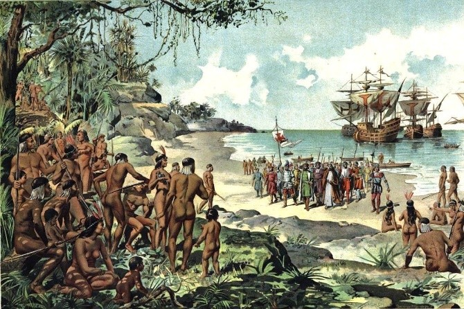
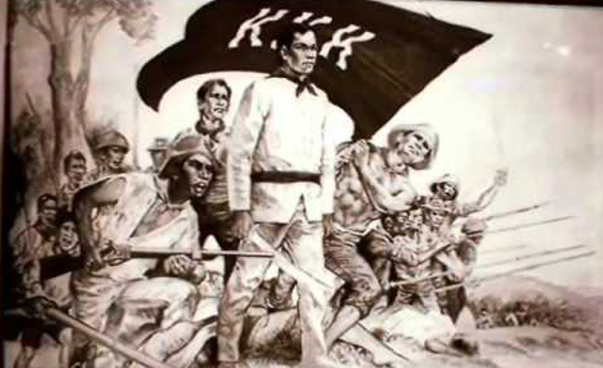

A Chronicle of Philippine History Through Colonization
Vol. 1, No. 1 — Bangadiw Edition
Today in The Daily Peenoise
June 12, 1898 — Philippine Independence Declared
General Emilio Aguinaldo proclaimed the independence of the Philippines from Spain in Kawit, Cavite.
The Philippine flag was unfurled and the national anthem was played publicly for the first time.
August 30, 1896 — Cry of Pugad Lawin
The Katipunan, led by Andrés Bonifacio, tore their cedulas as a symbol of defiance,
marking the beginning of the Philippine Revolution.
March 29, 1901 — Capture of Emilio Aguinaldo
Aguinaldo was captured in Palanan, Isabela, effectively weakening organized resistance during the Philippine-American War.
February 15, 1889 — First Issue of La Solidaridad
Filipino reformists José Rizal, Marcelo H. del Pilar, and Graciano López Jaena published the first issue of La Solidaridad
in Madrid. They demanded equal rights, representation in Spain, and an end to friar abuses, sparking the rise of
Filipino nationalism.
“People without the knowledge of their past history, origin, and culture is like a tree without roots.” – Jose Rizal
THE ARRIVAL OF THE SPANIARDS
By Nemo Gajes
“Butuan – March 1521”

I arrived in Butuan this morning just as the fishermen were pulling their boats ashore,
unaware that history was preparing to announce itself on the horizon. The sea was calm,
too calm, as if waiting. It was then that I noticed the silhouettes: tall ships, unfamiliar
to our shores, cutting through the water with deliberate purpose.
As the vessels drew nearer, the air shifted. The townsfolk gathered behind me, whispering,
unsure whether to welcome or run. The ships carried the flag of Castile and the people upon
them, pale-skinned, armored, armed, were unlike any our communities had ever seen. Their leader,
Ferdinand Magellan, stepped onto the shore with a measured confidence, his men forming a
disciplined line behind him.
I stood only a few paces away as Datu Siaiu of Butuan approached with cautious respect.
The Spaniards bowed; their gestures were rehearsed, almost ceremonial. Gifts were exchanged,
though neither side fully understood the language or intent of the other. What I did
understand, however, was the look in Magellan’s eyes; one of curiosity, ambition, and certainty.
Before the sun set, a cross was erected upon the hill overlooking the sea. The Spaniards
called the moment a proclamation; our elders called it a sign. As for me, standing between
the old world and the one now arriving by ship, I could only feel the weight of something
irreversible taking form.
The Spaniards came seeking a passage to spices, but as I observed them closely, I could not
ignore the sense that they sought more than trade. Their presence was not a passing breeze;
it was the beginning of a long wind that would reshape these islands for centuries to come.
THE GALLEON TRADE
By Nemo Gajes
“Manila – 1565”
The morning sky over Manila Bay was a dull gray when I first heard the cry from the docks:
“The galleon has arrived!” In minutes, the shoreline transformed into a restless crowd of
merchants, sailors, and curious townsfolk. I pushed my way through until I reached the pier,
where the massive silhouette of the galleon San Pedro loomed like a floating fortress.
Its hull groaned under the weight of cargo from the distant Americas with silver bars, exotic
textiles, carved trinkets, and peculiar foods that drew the noses of bystanders closer.
Spanish officials hurriedly organized an inspection, their quills scratching over parchment
as goods were cataloged with rigid discipline.
I spoke briefly with a sailor who had spent months battling the Pacific. His face bore the
exhaustion of a man who had seen both storms and starvation. “This trade,” he muttered,
“ties our worlds together, but it takes from us in equal measure.” His words lingered with me
long after he walked away.
By noon, local merchants rushed forward with baskets of spices, silk, pearls, and woven
fabrics which were items destined to be carried back across the ocean. A lively bargaining session
erupted, echoing across the bay as Spanish pesos exchanged hands with eager intensity.
As I observed the day unfold, it became clear that the galleon was more than a ship; it was
the artery through which Manila’s lifeblood now flowed. Its arrival meant opportunity,
connection, and an undeniable dependency that would shape our city into a global crossroads.
THE PROPAGANDA MOVEMENT
By Charl Joshua Villanueva
“Madrid – February 15, 1889”
Winter still clung to Madrid when I climbed the narrow staircase leading to the modest office
where several Filipino expatriates gathered, the air thick with ink, tobacco, and restless
conviction. They called themselves propagandists not of deceit, but of enlightenment. Among
them was a young doctor from Laguna, José Rizal, seated at his desk writing with sharp, deliberate
strokes.
As I stepped inside, Marcelo H. del Pilar reviewed drafts of articles for La Solidaridad,
his brow knit with intensity. “We are not asking for revolution,” he told me, looking up only
briefly. “We are asking for reason.” His voice carried the frustration of men who had been
unheard for too long.
Papers scattered across the room bore essays criticizing friars, advocating for representation
in the Cortes, and calling for reforms that were long overdue. Each piece carried an urgency
that mirrored the beating of a restless heart. I watched them debate, revise, and translate
their words becoming weapons sharper than any blade.
Outside, the streets of Madrid bustled indifferently, unaware of the powerful movement
fermenting in that cramped room thousands of miles away from home. But inside, I felt the
pulse of a nation awakening. These were not rebels; they were scholars, thinkers, sons of the
archipelago determined to awaken their countrymen through intellect rather than force.
As I left the office that evening, the cold air did little to extinguish the fire I had just
witnessed. The Propaganda Movement was not merely a call for reform as it was the earliest sign
that the Filipino spirit had begun to find its voice.
THE PHILIPPINE REVOLUTION
By Charl Joshua Villanueva
“Pugad Lawin – August 23, 1896”

The forest clearing of Pugad Lawin trembled with anticipation as hundreds of men and women
gathered beneath the shade of towering trees. I made my way through the crowd, their faces
marked by equal parts fear and resolve. In the center stood Andrés Bonifacio, his gaze fixed
on the Spanish documents clutched tightly in his hand.
He raised the papers toward the sky, cedulas issued by the colonial government, and in a voice
that carried across the clearing, he declared the intent to break free from centuries of rule.
With a swift motion, he tore the cedula to pieces. The crowd erupted, first in gasps, then in
defiant shouts. One by one, others followed, shredding their documents as if shedding the
weight of oppression itself.
I felt the ground shake under the stomping of feet as men armed with bolos lifted their blades
and swore loyalty to the Katipunan. Women distributed food, cloth, and messages between
villages, their determination no less fierce. It was clear to me then: this was no longer
a secret society for it was a nation rising.
The air smelled of sweat, smoke, and the unmistakable scent of change. Bonifacio addressed
the assembly, his voice unwavering. “Now begins the war for our freedom,” he announced.
The intensity of his words struck me deeply; it was as if the very land itself responded with
a pulse of readiness.
As I stood among them, surrounded by the early flames of revolution, I understood that the
path ahead would be marked by sacrifice. But I also knew that the spark ignited here at
Pugad Lawin would spread across Luzon and beyond, lighting the way toward the birth of a nation.